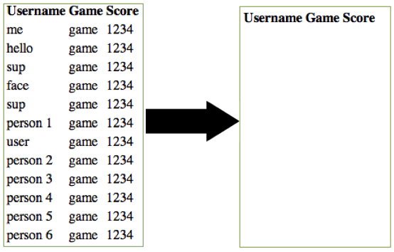
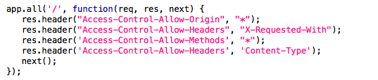

ScoreCenter is a useful device store and view your proud moments in any computer or video
games that you play. Such an application requires a number of pages; a place to submit your
new highscore, a way to search for the champions of a particular game, and a way to search
for the scores of a certain user or player. Young people have been playing games and
comparing their high scores since the days of pong and frogger, this application simply offers
a high-tech, user friendly way to do so.
For this assignment, I was asked to test and find the security limitations of the heroku
app found at http://peaceful-plains-9535.herokuapp.com/
by Michael Silberblatt. Before this ScoreCenter can be fully employed, it must be checked for
any possible vulnerabilities and weaknesses. The following is a brief account of the problems
I found and possible solutions to fix these issues.
Methodology
To test this application, first I attempted to manually find any weaknesses by going through
each page. I checked for basic problems by attempting to overload the application with too much
data, submitting HTML tags, and trying to access the code. Next, I tested the application using
third party programs, such as Burp and tktk.
Abstract of Findings
In all, the ScoreCenter has a few vulnerabilities, as well as some bugs that can be easily fixed.
Vulnerabilities: ScoreCenter's main vulnerability is that the application has been left
too open. It is simple to cause some serious damage to the application; luckily, it is also simple
to remedy these issues. These issues include limited data space and unlimited data submission,
a delete_all feature, and CORS universal allow.
The bugs, too can be easily remedied. I have included details about each of these
vulnerabilities and bugs below.
Issues Found
1. Not Enough Space & No Submit Size Limit
Location: /new
Severity: Medium: A malicious user could incapacitate the site if they wanted to,
but even if the application was used properly, eventually it would run out of space.
Description: There is only 129 MB of space available on the ScoreCenter Database.
As well, there is no limit to how much input a user can submit for "Username," "Game Title," or
"Highscore." The site could be incapacitated by receiving too much data. Although I did not
test how much data the I could insert as a user before it crashed, it is reasonable to assume
that it would, in fact, crash once it hit its limit.
Resolution: Include a limit on how many characters users can enter in the
Username, Game Title, and Highscore text boxes to prevent abuse.
2. Anyone Can Delete the Database
Location: /delete_all
Severity: High: Anyone, whether on purpose or by accident, can completely wipe out
all of the database's information.
Description: By simply visiting the /delete_all page, all of the ScoreCenter's
information is deleted.
Resolution: Get rid of the /delete_all page. It is openly accessible to anyone,
and holds great power. Instead, rely on manual deletion or visit the Database on Mongohq
to clear it.

3. Usersearch Doesn't Work
Location: /usersearch
Severity: Low: This isn't actually a vulnerability, but rather it's a bug.
Description: Regardless of what the user inputs as the username, the page
shows no results.
Resolution: There is an error in the code. In the app.get function for /search_results,
line 102, should search for 'username':req.query.username, instead of 'id':req.query.username.
4. Cannot Search by Game Title
Location: /search_results
Severity: Low: It's a bug, not a vulnerability.
Description: Page doesn't allow for the user to input a game title to search.
It instead reads a lot like the homepage (/), and simply shows usernames and game titles in
the order of their submission.
Resolution: Create a form for that allows for user input, much like what the
/usersearch page has.
5. CORS Uses Universal Allow
Location: /
Severity: High: Anyone can access the response.
Description: By having app.all contain the wildcard for all of the CORS headers
(*), the application is open to a few different kinds of attacks. For one, if it connects to
a malicious site, that site can make COR and steal the ScoreCenter's response. As well, this
could allow outside users to access parts of the application in the same way as an internal
employee or the owner might.
Resolution: Don't use the wildcard. Include specific rules and websites that are
acceptable, or exclude particular ones.

Conclusion
There are a number of improvements that can be made on this ScoreCenter application. As
it currently stands, there are many ways in which malicious users can disrupt or abuse the
application, or innocent users may be confused or dissatisfied.
I recommend that the owner immediately addresses the issues enumerated above, and then hire
someone who is actually skilled in testing security to check for additional vulnerabilities
and weaknesses.